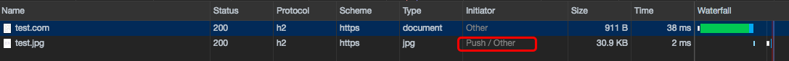

- 信道复用（浏览器有自己的并发TCP链接数，服务器本身也有TCP最大限制）
- 分帧传输（即便是HTTP1.1，同一个TCP链接通道中，也需要等待前一个HTTP请求完成请求和相应后，才能发送第2个HTTP请求）
- server push（HTTP1.1时代，请求时由客户端主动，服务器被动接收请求的）
简单的实现HTTP2及其推送功能，利用nginx，开启Http2和推送功能即可。因demo的ssl证书为自签名证书，并不被浏览器所信任，因此会拒绝收到推送的内容，可以在chrome://net-internals/http2中查看推送是否成功。
